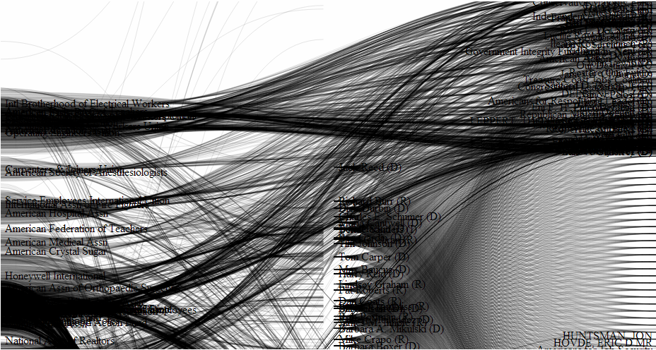
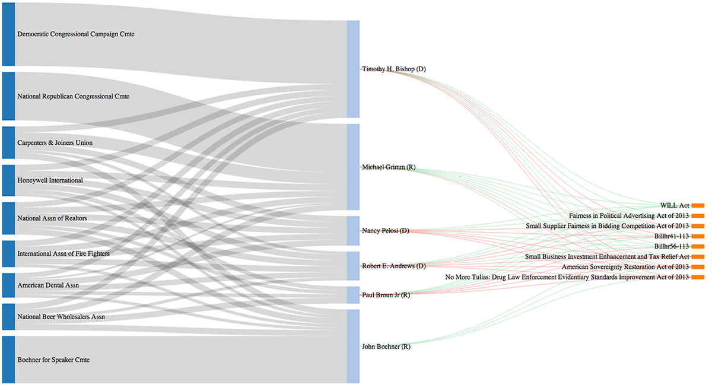

Cost of a Vote
Cost of a vote is a visualization of campaign contributions and legislative voting. See it live
Motivation
One might wonder why a company would aid potential political candidates unless it had some something to gain from their winning. COV was an initial attempt at visualizing a correlation between how money went from a company to a candidate, and how that might ultimately affect how this candidate voted on bills.
Audience
COV is for people who are interested in the American legislative system but do not necessarily have the background to analyze what’s going on.
Goal
Cost of a Vote is a project that aims to make clear correlations between where a political candidate’s campaign finances come from and how it ultimately affects the way she votes on a bill.
Wanted Patterns
We wanted an easy to consume visualization that showed the link between campaign contributions and subsequent votes.
Visualization
 Found Patterns
My friend Saied was a regional field director on the Obama campaign and now lobbying for a non-profit. He had this to say:
Essentially just looking at money and votes may be interesting but it’s not telling the full story. Furthermore the data is dense enough that it’s hard to understand without pruning, but the process of pruning itself can, and does, lead to biases within the visualization.Its not just about campaign contributions directly... there are indirect contributions through dark money groups... super pacs bribery also takes the form of the "revolving door," in which politicians are guaranteed high paying jobs in the private sector if they carry out certain agendas... there is always a threat of supporting the other candidate, the opponent... all of these then go into influencing how a politician votes
political candidates are in effect vetted by big business. That is to say that generally speaking the political candidates who are willing to play the game are the ones that are even allowed to run for office in the first place...
Implementation
Data Sources
- Campaign contributions and candidates
- OpenSecrets
- Bills
- UnitedStates/congress
- Legislators
- UnitedStates/congress-legislators
- Votes
- Govtrack
Front-end choices
D3.js (along with HTML, Javascript, CSS) and the Sankey Plugin for D3. We went with D3, because it offered flexibility using Scalable Vector Graphics. Having the ability to scale up and down was useful in our implementation as there was the potential to have a lot of data appear on the screen at once. The Sankey Diagram was our choice for visualizing the data. Instead of having all links be a fixed width, as is the case with standard flow diagrams, a Sankey diagram normalizes link values by representing them as a percent of the sum of all links. Link widths are determined using these percentages.

{kind=link}
{kind=link}